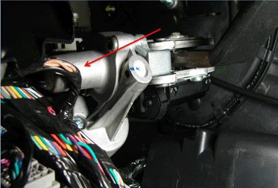
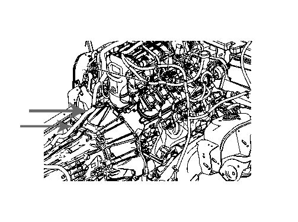
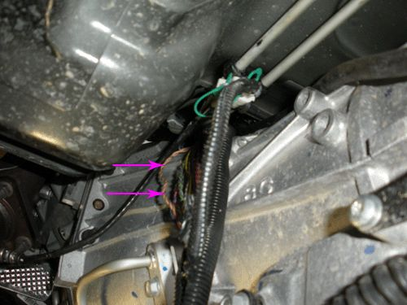
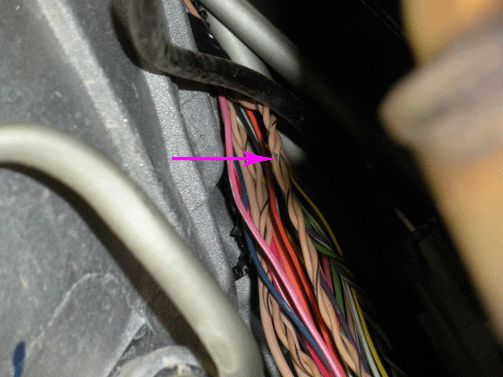
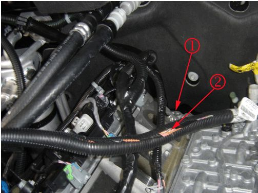
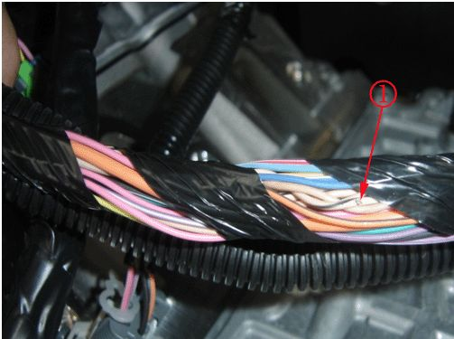
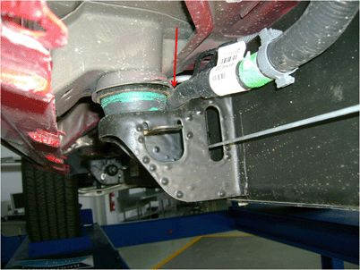

Part 3
Chafed Wiring Harness at Adjustable Pedals Motor1. Turn OFF the ignition and all accessories.

2. Inspect for chafed, damaged, pinched, open or shorted wiring at the adjustable pedals motor as shown.
3. If the wiring is damaged, repair as needed. Refer to Power and Signal Distribution > Wiring Systems and Power Management > Diagnostic Information and Procedures in SI. Protect the conduit by covering any sharp edge with butyl tape and the harness with woven polyester (PET) electrical tape. Secure the harness as needed.
4. Clear any DTCs that may be present with a scan tool and verify the proper operation of the vehicle.
Chafed Wiring Harness at Transmission
1. Turn OFF the ignition and all accessories.
2. Disconnect the negative battery cable. Refer to Battery Negative Cable Disconnection and Connection in SI.
3. Raise the vehicle. Refer to Lifting and Jacking the Vehicle in SI.
4. Support the transmission with a transmission jack.
5. Remove the transmission support crossmember. Refer to Transmission Support Crossmember Replacement in SI.

6. Lower the transmission sufficiently to provide access to the engine wiring harness where it routes from the engine intake manifold to the transmission bell housing as shown.
7. Release the wiring harness conduit from the retainers that secure it to the transmission and/or transfer case.


8. Examine the harness for wiring that may be exposed outside of the conduit. Inspect all areas for chafed, damaged, pinched, open or shorted wiring as shown. If damage to the wiring is not observed, then extract the wiring from the conduit and inspect all remaining areas as needed.
• If the wiring is damaged, repair as needed. Refer to Power and Signal Distribution > Wiring Systems and Power Management > Diagnostic Information and Procedures > Wiring Repairs in SI. Protect the conduit by covering any sharp edge with butyl tape and the harness with woven polyester (PET) electrical tape. Secure the harness as needed.
9. Raise the transmission as needed to install the transmission support crossmember. Refer to Transmission Support Crossmember Replacement in SI.
10. Lower the vehicle.
11. Connect the negative battery cable. Refer to Battery Negative Cable Disconnection and Connection in SI.
12. Clear any DTCs that may be present with a scan tool and verify the proper operation of the vehicle.
Chafed Wiring Harness at Engine Intake Manifold
1. Turn OFF the ignition and all accessories.
2. Remove the upper intake manifold sight shield. Refer to Upper Intake Manifold Sight Shield Replacement in SI.
3. Release the wiring harness conduit from the retainers that secure it to the rear of the engine and at the top of the transmission bell housing.

Note
The engine intake manifold is shown removed to provide clarity.
4. Pull the wiring harness up gently at the rear of the engine (1).

Inspect for chafed (1), damaged, pinched, open or shorted wiring. If damage is not observed, then extract the wiring from the conduit and inspect all of the remaining areas as needed.
• If the wiring is damaged, repair as needed. Refer to Power and Signal Distribution > Wiring Systems and Power Management > Diagnostic Information and Procedures. Protect the conduit by covering any sharp edge with butyl tape and the harness with woven polyester (PET) electrical tape. Secure the wiring harness within the conduit as needed. Attach the wiring harness conduit to the retainers that secure it to the rear of the engine and at the top of the transmission bell housing.
5. Install the upper intake manifold sight shield. Refer to Upper Intake Manifold Sight Shield Replacement in SI.
6. Clear any DTCs that may be present with a scan tool and verify the proper operation of the vehicle.
Chafed Wiring Harness at Chassis Body Mounts Left Side Frame Rail
1. Turn OFF the ignition and all accessories.
2. Raise and support the vehicle. Refer to Lifting and Jacking the Vehicle in SI.

3. Inspect the wiring harness along the left side frame rail at the body mounts as shown for chafed, damaged, pinched, open or shorted wiring.
4. If the wiring is damaged, repair as needed. Refer to Power and Signal Distribution > Wiring Systems and Power Management > Diagnostic Information and Procedures. Protect the conduit by covering any sharp edge with butyl tape and the harness with woven polyester (PET) electrical tape. Secure the harness as needed.
5. Lower the vehicle.
6. Clear any DTCs that may be present with a scan tool and verify the proper operation of the vehicle.